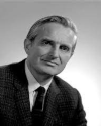
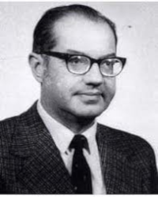
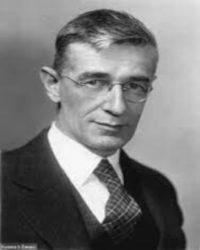

|  | Vissza a főoldalra |
 | |
|  | |||
J.C.R. Licklider, vagyis Joseph Carl Robnett Licklider (1915. március 11. - 1990. június 26.)Amerikai pszichológus és informatikus volt, aki az informatika terén és az interaktív számítógépek koncepciójának fejlesztésében játszott kulcsfontosságú szerepet. A neve szorosan összefonódik az ARPANET, az internet elődjének fejlesztésével és az interaktív számítógépek területén végzett innovációkkal. Íme néhány kulcsfontosságú információ J.C.R. Licklider életéről: Tanulmányok és Pályafutás: Licklider pszichológiát tanult a Washingtoni Egyetemen, majd doktori fokozatát a Rochesteri Egyetemen szerezte. Az AT&T Bell Labs-nál is dolgozott, mielőtt 1962-ben a Bolt, Beranek and Newman (BBN) vállalathoz került. Az "Intergalaktikus Számítógép Hálózat" elképzelése: Licklider az "Intergalactic Computer Network" (Intergalaktikus Számítógép Hálózat) koncepciójával vált ismertté. Elképzelte egy olyan számítógép hálózatot, amely lehetővé teszi az emberek számára, hogy könnyen és hatékonyan megosszák az információkat. Az ARPANET és az Internet: Licklider a DARPA-nál (Védelmi Minisztérium Közös Rendszerek Hivatala) dolgozott, ahol támogatta az ARPANET kialakítását. Licklider látta a számítógépek közötti kommunikáció és együttműködés potenciálját, ami hozzájárult az internet kialakulásához. Az "Összekapcsolt Számítógépek Tudománya" című cikk: Licklider 1968-ban közölte híres cikkét, amelyben az "Összekapcsolt Számítógépek Tudománya" kifejezést használta először. Ebben a cikkben előrevetítette az interaktív számítógépek, a virtuális valóság és az online információszolgáltatás lehetőségeit. A "Time-sharing" rendszerek előmozdítása: Licklider hozzájárult a "time-sharing" rendszerek kifejlesztéséhez, amelyek lehetővé tették, hogy több felhasználó egyidejűleg használhassa ugyanazt a számítógépet. Ez növelte az interaktivitást és az informatikai erőforrások hatékonyabb kihasználását. Későbbi Pályafutás: Licklider 1973-ban az Informatika Kutató Intézet (Institute for Computer Science and Technology) igazgatója lett, majd később az ARPA Informatika és Irányítástechnika Programjának vezetője. J.C.R. Licklider munkássága és víziói alapvetően hozzájárultak az informatika és az internet fejlődéséhez, és az interaktív számítógépek koncepcióját tette lehetővé. Öröksége mély nyomot hagyott az információtechnológia terén Forrás: Wikipédia, AI |
|||